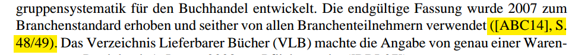

22.04.2020 / XML User Group Stuttgart: XUGS #24
Typische Elemente einer Buchstruktur sind schnell ermittelt und intuitiv verwendbar:
<biblioentry role="monograph" xml:id="bib_ABC14">
<abbrev>ABC14</abbrev>
<editor><personname><firstname>Thomas</firstname><surname>Bez</surname></personname></editor>
<title xml:lang="de">ABC des Zwischenbuchhandels</title>
<edition>7. Auflage</edition>
<publisher>
<publishername>Börsenverein des Deutschen Buchhandels</publishername>
<address><city>Frankfurt am Main</city></address>
</publisher>
<pubdate>2014</pubdate>
<pagenums>50 S.</pagenums>
</biblioentry>
<bibliomixed role="monograph" xml:id="bib_ABC14mixed">
<abbrev>ABC14</abbrev> <editor><personname>BEZ, Thomas</personname></editor> (Hg.):
<title>ABC des Zwischenbuchhandels</title>, 7. Auflage. Frankfurt am Main: Börsenverein
des Deutschen Buchhandels, <pubdate>2014</pubdate>. <pagenums>50 S.</pagenums>
</bibliomixed>
Auf einen bibliografischen Eintrag verweist man aus dem Haupttext mit <biblioref>, z. B.:
<para>Die endgültige Fassung wurde 2007 zum Branchenstandard erhoben und seither von allen
Branchenteilnehmern verwendet (<biblioref linkend="bib_ABC14"/>, S. 48/49).</para>Beim Rendern nach PDF wird anstelle des Verweises die Abkürzung des Eintrags aus dem <abbrev>-Element eingesetzt (und falls keine Abk. vorhanden, dann stattdessen die @xml:id):
<glossentry xml:id="gt_imprint">
<glossterm>Imprint</glossterm>
<glossdef>
<para>Eine Verlagsmarke, die entweder keine rechtlich selbständige Firma ist oder als Firma zu einer Verlagsgruppe (Konzern) gehört, die aber
im Markt als Verlag auftritt, z. B. Penguin Deutschland als Teil der Verlagsgruppe Random House.</para>
</glossdef>
</glossentry><glossterm linkend="IDREF">Glossartext</glossterm>Gesucht wird die <indexterm><primary>Wahrscheinlichkeit</primary><secondary>a posteriori</secondary>
</indexterm>A-posteriori-Wahrscheinlichkeit, dass [...]Die Warengruppensystematik <indexterm class="startofrange" xml:id="idt_002"><primary>Warengruppensystematik</primary></indexterm>
des Deutschen Buchhandels [...] Mit uneindeutigen Grenzfällen muss somit sowohl bei der automatischen Klassifikation als auch
bei der manuellen Eingruppierung stets gerechnet werden.<indexterm class="endofrange" startref="idt_002"/>Dem DocBook Technical Committee als Standardisierungsgremium ist es wichtig, dass DocBook durch Anwender*innen an eigene Bedürfnisse angepasst werden kann. Um dies zu erleichtern, hat man sich bewusst für RELAX NG + Schematron entschieden und beim Modellieren auf leichte Erweiterbarkeit geachtet.
Schema-Anpassungen behalten den DocBook-Namensraum bei, spezifizieren aber einen eigenen Versionswert. Das Technical Committee empfiehlt dazu folgendes Benennungsmuster: (subset|extension|variant) (name[-version])+. Beispiel:
<book xmlns="http://docbook.org/ns/docbook"
xmlns:mml="http://www.w3.org/1998/Math/MathML"
xmlns:xlink="http://www.w3.org/1999/xlink" xml:lang="de"
version="5.0-extension Avve-1.0">Ein RELAX-NG-Schema passt man an, indem man zunächst das zu erweiternde (oder einzuschränkende) Schema inkludiert:
namespace db = "http://docbook.org/ns/docbook"
# evtl. weitere Namespace-Deklarationen
include "docbook.rnc" {
# Neudefinition von DocBook-Mustern, v. a. für Einschränkungen
}
# neue und erweiterte Muster (zusätzliche Attribute und Elemente)# custom avve elements
db.domain.inlines |= db.lucene.numberOfDocuments
db.domain.inlines |= db.lucene.numberOfTerms
db.domain.inlines |= db.lucene.numberOfUniqueTerms
db.domain.inlines |= db.modifiedInstancesRatio
db.domain.inlines |= db.numberOfClasses
db.domain.inlines |= db.numberOfTrainingInstances
db.lucene.numberOfDocuments = element numberOfLuceneDocuments {
empty
}
db.lucene.numberOfTerms = element numberOfLuceneTerms {
empty
}
[...]DocBook-XML:
<para>[...] In einem Bestand von <numberOfLuceneDocuments/> Dokumenten mit insgesamt <numberOfLuceneTerms/>
unterschiedlichen Lemmata betrug die Zahl der Lemmata, welche nur in einem Dokument
vorkommen, <numberOfUniqueLuceneTerms/>. [...] <para>PDF-Ausgabe:
<!-- in oXygen this path is translated to a local framework file via XML catalog -->
<xsl:import href="http://cdn.docbook.org/release/xsl/current/fo/docbook_custom.xsl"/><xsl:param name="lucene.numberOfDocuments" select="6927"/>
<xsl:param name="lucene.numberOfTerms" select="2971631"/>
<xsl:param name="lucene.numberOfUniqueTerms" select="1852691"/>
<xsl:template match="db:numberOfLuceneDocuments">
<xsl:value-of select="$lucene.numberOfDocuments"/></xsl:template>
<xsl:template match="db:numberOfLuceneTerms">
<xsl:value-of select="format-number($lucene.numberOfTerms, '###.###', 'european')"/></xsl:template>
<xsl:template match="db:numberOfUniqueLuceneTerms">
<xsl:value-of select="format-number($lucene.numberOfUniqueTerms, '###.###', 'european')"/></xsl:template>
Das XSLT kann natürlich auch Werte zum Renderingzeitpunkt berechnen:
<xsl:template match="db:randomClassifierSuccessRate">
<xsl:value-of select="
format-number(
sum(
for $i in $avve.warengruppenDistribution/warengruppen/warengruppe
return (($i/@traininstances + $i/@testinstances) div ($avve.numberOfTrainingInstances + $avve.numberOfTestInstances))
* (($i/@traininstances + $i/@testinstances) div ($avve.numberOfTrainingInstances + $avve.numberOfTestInstances))
),
'#0,0000%',
'european')" />
</xsl:template>Duch ein entsprechendes Template habe ich ganze Tabellen auf Basis von Variablen im XSLT dynamisch berechnet:
<xsl:template match="db:warengruppenDistribution">
<xsl:variable name="temp.warengruppenTable">
<db:table xml:id="temp.warengruppenTable" pgwide="0">
[Definition DocBook-Tabelle gekürzt]
<xsl:for-each select="$avve.warengruppenDistribution/warengruppen/warengruppe">
<xsl:sort select="@traininstances + @testinstances" order="descending" />
<db:row>
[...]
<db:entry><xsl:value-of select="format-number((@traininstances + @testinstances) div
($avve.numberOfTrainingInstances + $avve.numberOfTestInstances), '0,00%', 'european')"/></db:entry>
</db:row>
</xsl:for-each>
</xsl:variable>
<xsl:apply-templates select="$temp.warengruppenTable" mode="warengruppe"/>
</xsl:template>Verwendet man ein eigenes/angepasstes XSL-Stylesheet, kann man dort auch Defaultwerte des importierten DocBook-XSL-Skriptes überschreiben, z. B.:
<!-- DocBook parameters -->
<xsl:param name="paper.type" select="'A4'"/>
<xsl:param name="page.margin.inner" select="'2.5cm'"/>
<xsl:param name="page.margin.outer" select="'2.5cm'"/>
<xsl:param name="page.margin.top" select="'1.25cm'"/> <!-- margin from top edge of page to top of header -->
<xsl:param name="region.begore.extend" select="'0.75cm'"/> <!-- height of the header -->
<xsl:param name="body.margin.top" select="'1.5cm'"/> <!-- top of the text body, as calculated from margin.top -->
<xsl:param name="page.margin.bottom" select="'2cm'"/> <!--margin from bottom edge of page to bottom of footer -->
<xsl:param name="body.start.indent" select="'0cm'"/> <!-- switch off DocBook's default indenting -->
<xsl:param name="body.font.family" select="'Times Roman'"/>
<xsl:param name="body.font.master" select="12"/> <!-- master font size -->
<xsl:param name="header.column.widths">1 4 1</xsl:param> <!-- give more space to the running header title -->